1. Software and Hardware Preparation
Software: VMware is recommended. I use VMware 12.
Image: CentOS6. If you don't have the image, you can download it from Alibaba Cloud.https://mirrors.aliyun.com/centos/

Hardware: Since you are running virtualization software on the host machine to install CentOS, there are certain requirements for the host machine's configuration. At minimum: a dual-core i5 CPU, 500GB hard disk, and 4GB or more of RAM.

2. Virtual Machine Preparation
1. Open VMware and select Create a New Virtual Machine.
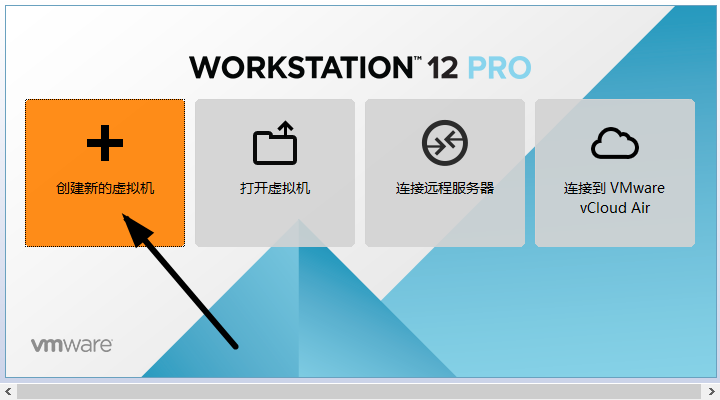
2. Typical Installation vs. Custom Installation
Typical Installation: VMware applies mainstream configurations to the virtual machine's operating system, which is very friendly for beginners.
Custom Installation: Custom installation can selectively strengthen some resources and remove unneeded ones, avoiding resource waste.
Here I choose Custom Installation.

3. Virtual Machine Compatibility Selection
Pay attention to compatibility here. If a virtual machine created in VMware 12 is copied to VMware 11, 10, or an even lower version, incompatibility issues may occur. If a virtual machine created in VMware 10 is opened in VMware 12, no compatibility issues will occur.
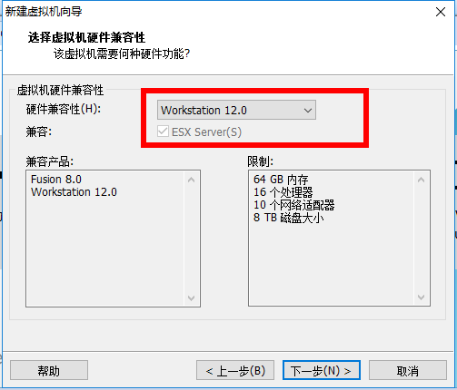
4. Select "Install Operating System Later"

5. Operating System Selection
Here, select the operating system to be installed later. A correct selection will make VMware Tools more compatible. Here, select CentOS under Linux.

6. Virtual Machine Location and Naming
The virtual machine name is just a name; it makes it easier to find it when there are many virtual machines.
VMware's default location is on the C drive. Here I change it to the F drive.

7. Processor and Memory Allocation
Processor allocation should be based on your actual needs. If the CPU is insufficient during use, it can be increased later. This is only a CentOS installation demo, so both the processor and cores are set to 1.

Memory should also be allocated based on actual needs. My host machine has 8GB of RAM, so I allocate 2GB of memory to the virtual machine.
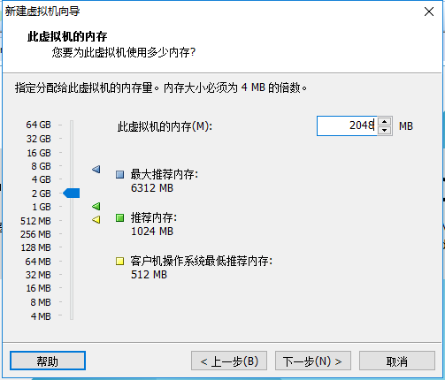
8. Network Connection Type Selection. There are four network connection types in total: Bridged, NAT, Host-Only, and No Networking.
Bridged: In Bridged mode, the virtual machine and host machine have a peer-level relationship on the network, equivalent to being connected to the same switch.
NAT: In NAT mode, to access the network, the virtual machine must communicate with the outside world through the host machine first.
Host-Only: The virtual machine is directly connected to the host machine.
The process of accessing the internet in Bridged and NAT modes is shown in the figure below.

The difference between Bridged and NAT
Here I select Bridged mode.

9. Keep the default options for the remaining two items.
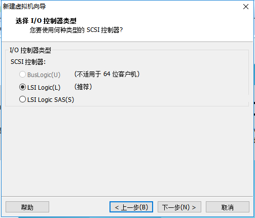
10. Disk Capacity
Temporarily allocate 100GB of disk capacity; it can be increased at any time later. Do not check "Allocate all disk space now", otherwise the virtual machine will directly allocate the entire 100GB to CentOS, causing the host machine's remaining hard disk space to decrease. Check "Split virtual disk into multiple files", which makes it convenient to copy and duplicate the virtual machine using storage devices.
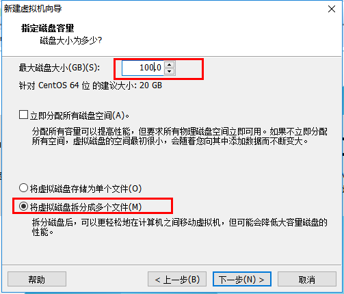
11. Disk name, keep the default.

12. Remove Unnecessary Hardware
Click "Customize Hardware".
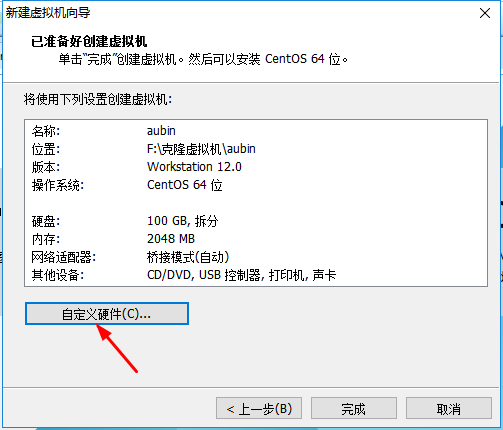
Select unnecessary hardware such as the sound card and printer, then remove them.
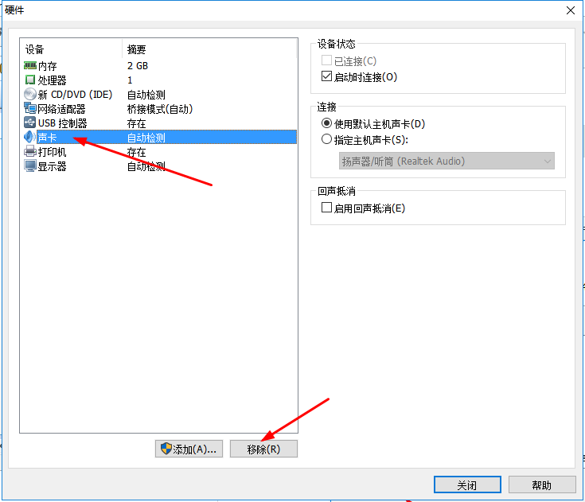
13. Click Finish; the virtual machine has been created.
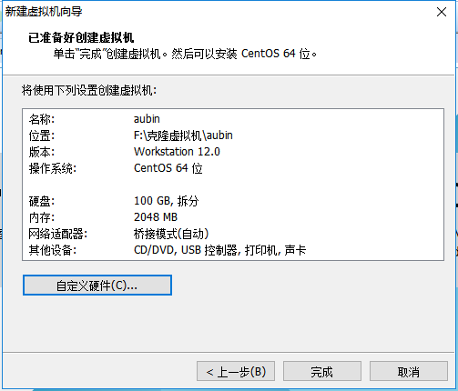
3. Installing CentOS
1. Attach the Disc
Right-click the newly created virtual machine and select Settings.
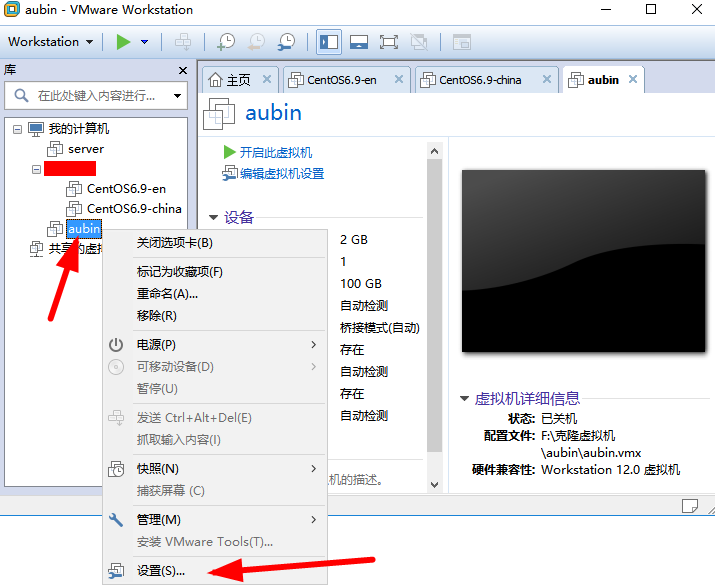
First select CD/DVD, then select "Use ISO image file", and finally click Browse to locate the downloaded image file. Be sure to check "Connect at power on", then click OK.

2. Power On the Virtual Machine
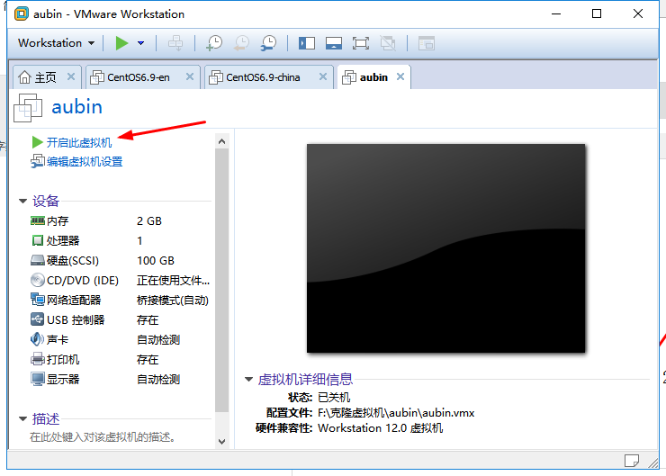
3. Install the Operating System
After powering on the virtual machine, the following screen will appear:
- Install CentOS 7
- Test this media & install CentOS 7
- Troubleshooting
Select the first option to install CentOS 7, press Enter, and the following screen will appear.
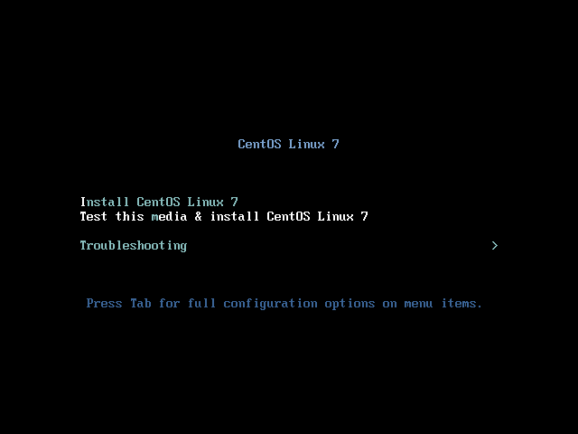
Select the language to be used during installation. Here, select English for the language and a US keyboard layout. Click Continue.

First, set the time.
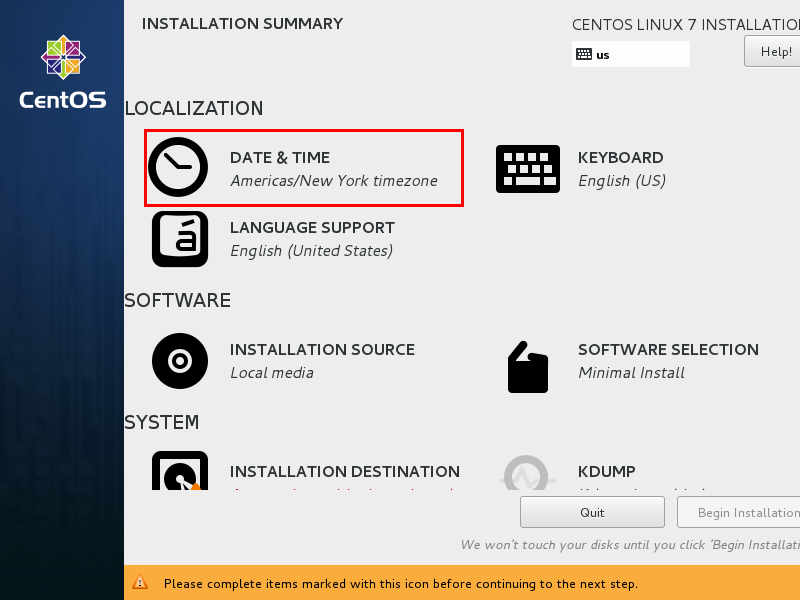
Select Shanghai for the time zone and check whether the time is correct. Then click Done.

Select the software to install.

Select "Server with GUI", then click Done.
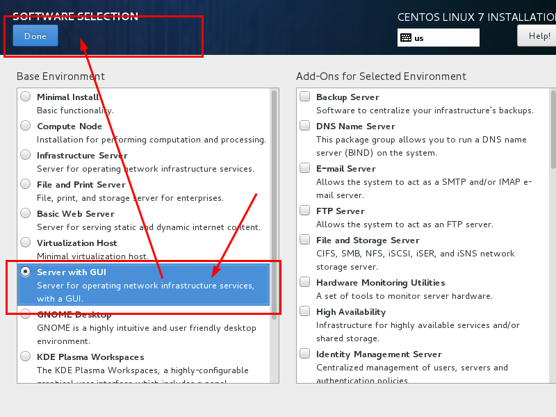
Select "Installation Destination"; here you can partition the disk.
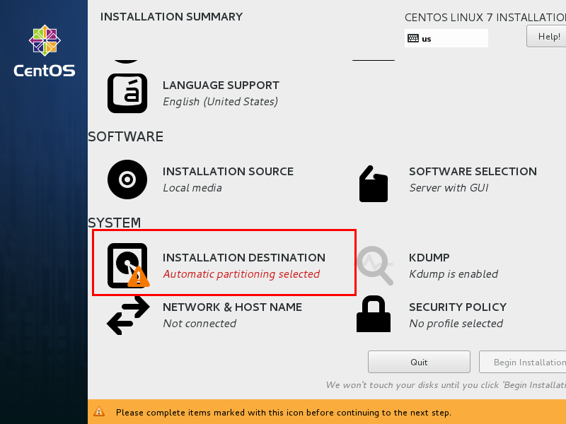
Select "I will configure partitioning", then click Done.
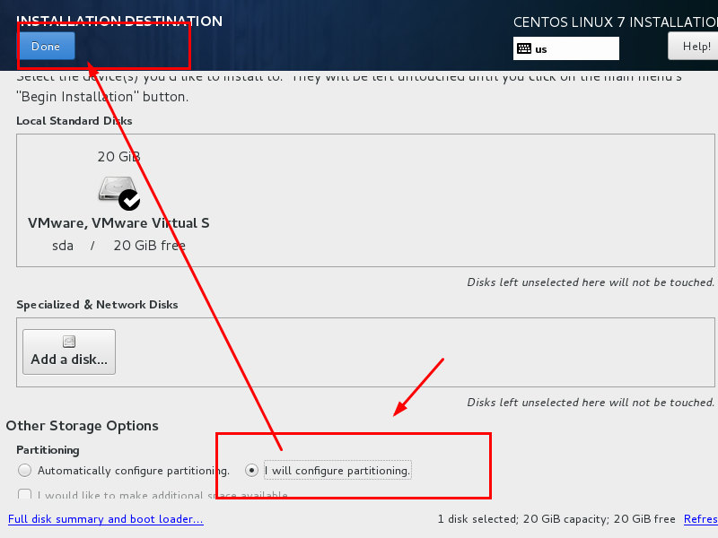
As shown in the figure below, click the plus sign, select /boot, and allocate 200MB to the boot partition. Finally, click Add.

Then allocate space to the other three partitions in the same way, and click Done.

A summary message will pop up; click "Accept Changes".

Set the hostname and network adapter information.

First, turn on the network adapter, then check whether an IP address can be obtained (I'm using Bridged mode here). Then change the hostname and click Done.
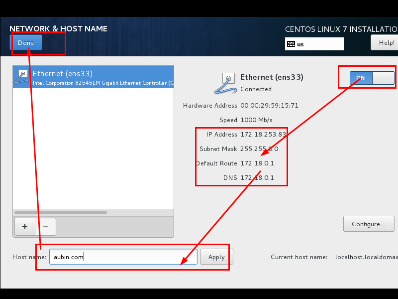
Finally, select "Begin Installation".
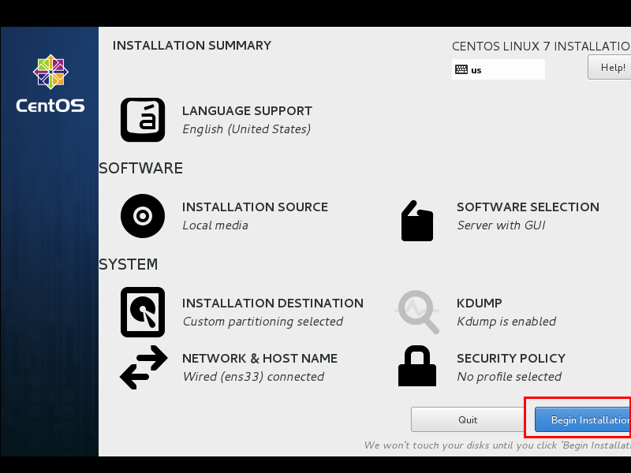
Set the root password.
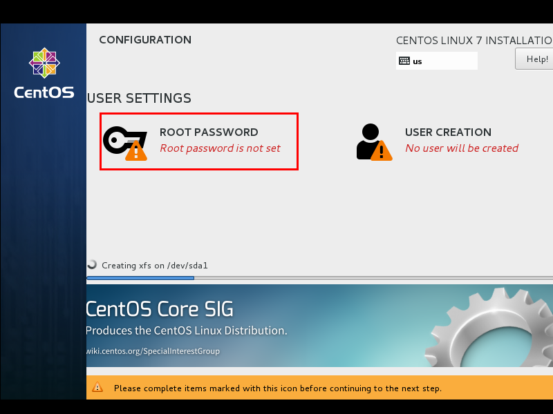
After setting the root password, click Done.

Click "USER CREATION" to create an administrator user.
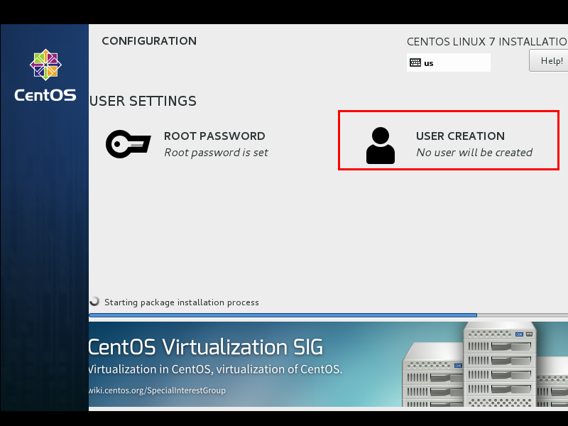
Enter the username and password, then click Done.

Wait for the system installation to complete, then reboot the system.
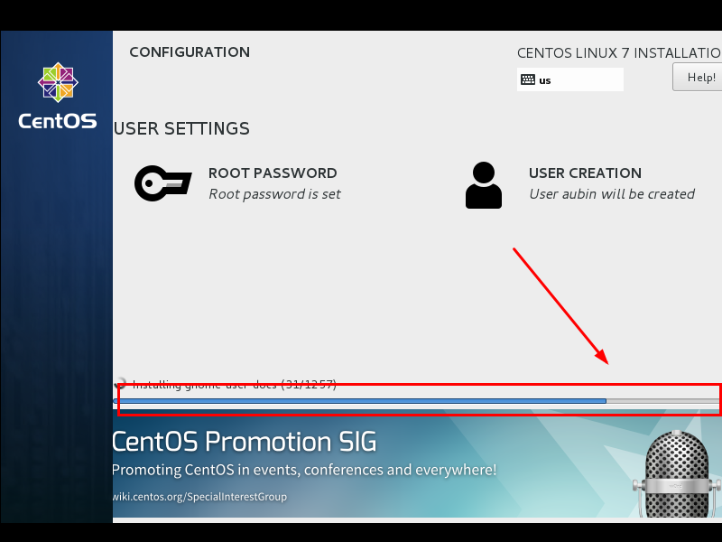
Author: Aubin
Link: https://www.jianshu.com/p/ce08cdbc4ddb
Source: Jianshu
Click me to share notes
<p style="font-size:14px;">The notes need to be an extension of the content of this article!</p><br> <p style="font-size:12px;"><a href="../tougao.html" target="_blank">For article submission, you can click here</a></p> <p style="font-size:14px;"><a href="./runoob-user-test-intro.html" target="_blank">How to obtain a registration invitation code</a></p> <h3 class="text-muted"><i class="fa fa-info-circle" aria-hidden="true"></i> You must <a href=".." class="runoob-pop">log in</a> before sharing notes!</h3> <p><a href="./runoob-user-test-intro.html" target="_blank">How to obtain a registration invitation code</a></p>